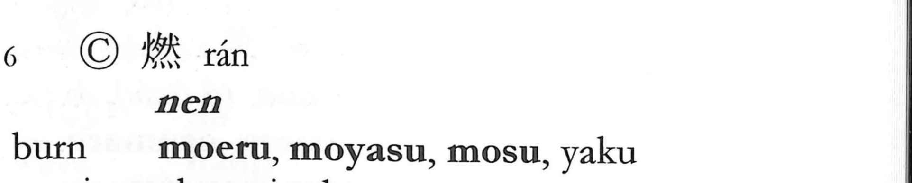

燃

Kun: moeru, moyasu, mosu | On: nen
to burn ・ to set on fire ・ combustion
Explanation
燃 is a phono-semantic character formed by adding an extra fire component 火 to 然 in order to express the act of burning. In its ancient form, 然 depicts the broiling of a sacrificial dog’s flesh, with 月 standing for meat (an abbreviation of 肉), and it originally meant “to burn.” As 然 later came to serve as a conjunction meaning “however,” the explicit sense of burning was carried by the newly made 燃. Here 然 provides the sound value (On reading nen; compare 撚, also read nen, meaning “to twist” or “to become entangled”), while the added fire emphasizes combustion. From the Han period onward, 燃 was used for “to burn” and “to set on fire.”